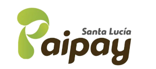

Piscinas
2
Peces y lombrices

PaiPayTech
Monitoreo acuícola
PaiPayTech centraliza calidad del agua, población estimada y muestras biométricas de peces.
Piscinas
2
Peces y lombrices
Registros
18
Historial de mediciones
pH promedio
7.20
Piscina principal
Estado
Monitoreando
MVP listo
Módulos
Calidad del agua, población y muestras de peces.
Código
PZ-001
El módulo queda visible en la ruta del producto, pero sin formulario hasta definir sus métricas.
Código
LB-001
Ejemplo visual del historial.
| Fecha | Piscina | pH | Población |
|---|---|---|---|
| 11/07/2026 14:30 | Piscina principal | 7.20 | 1.250 |
| 10/07/2026 09:15 | Piscina principal | 7.10 | 1.240 |